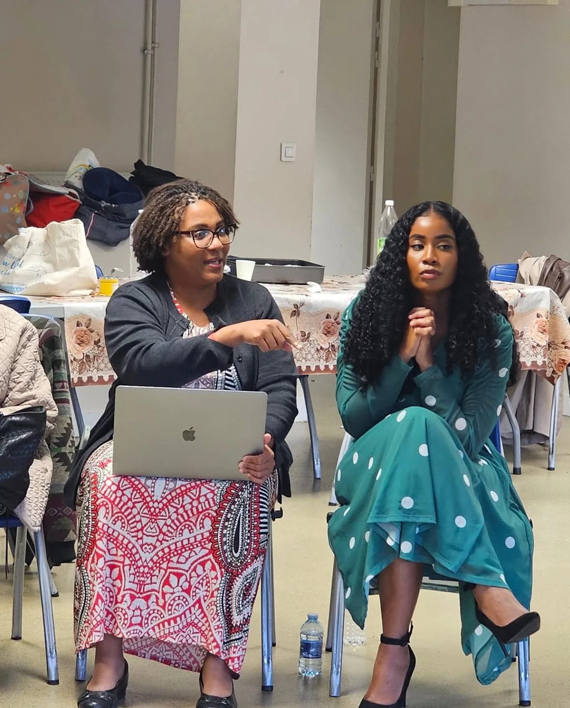

Grief That Has Been Quiet Too Long
Name losses, disappointments, transitions, and unfinished pain without minimizing what happened.
Grief Recovery & Mental Health Coaching
Tamara Conway creates faith-centered spaces for people carrying grief, anxiety, transition, and relational pain to slow down, name what is happening, and practice tools that support real healing.
Healing Starts With Language
“Emotions are a gift from God. They can get on the bus, but they cannot be allowed to drive the bus.”
What Is Processed
Name losses, disappointments, transitions, and unfinished pain without minimizing what happened.
Slow the emotional rush enough to find language, clarity, and a practical next step.
Notice the reactions that protected you before but may be limiting your relationships now.
Practice simple tools that help you respond with steadiness instead of only reacting from pain.
Make room for honest conversations that can hold truth, care, and healthier connection.
Turn insight into repeatable rhythms that support wholeness after the session ends.
The Shift
Grief is not only about death. It can come through divorce, disappointment, betrayal, family pain, transition, or the loss of what you hoped life would be.
Certified: Grief Recovery Specialist, Addiction Studies
Coaching Consultation
This consultation link is for mental health and grief recovery support with Tamara. It gives you a place to ask about the process, talk through what you are carrying, and see whether the next step makes sense.

How It Works
Create language for grief, wounds, reactions, and patterns without shame.
Identify what keeps showing up emotionally, relationally, and spiritually.
Apply faith-centered tools that help people respond with clarity, courage, and care.
Live Teaching
“You are allowed to tell the truth about where it hurts and still believe healing is possible.”
For individual support, group sessions, retreats, or mental health and grief recovery coaching, start with a conversation
Schedule AppointmentContact & Booking
Use the quick message form for coaching, speaking, seminars, grief recovery options, and program questions. You can also call or email directly.
Phone: 313-343-1422
Email: stamena4life@gmail.com
Booking: stevenconway@stamena4life.com
Mail: P.O. Box 210053, Auburn Hills, MI 48326